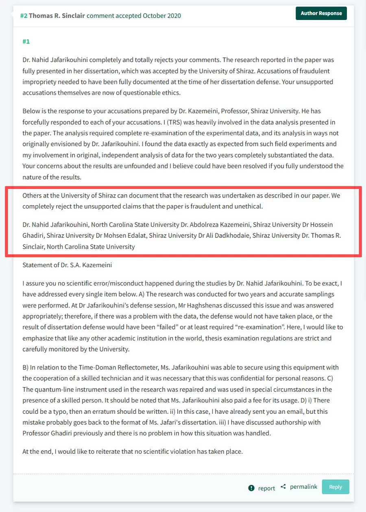

What happened next was one of the most troubling episodes in the entire experience.
As described in Part Five, several of the papers under investigation listed corresponding authors affiliated with prominent universities outside Iran.
One of the most important papers was published in Field Crops Research and listed Thomas Sinclair of the University of North Carolina as corresponding author.
Sinclair responded publicly to my concerns on PubPeer.
Readers may examine the exchange and form their own conclusions.
What interested me was not the tone of the response, but its substance.
The central issues remained unanswered.
No explanation was offered for the duplicated images discussed in Part Two.
No explanation was offered for the equipment-related concerns described in Part Four.
Instead, the response relied heavily on assurances received from within Shiraz University.
The most striking element concerned a statement that, according to Sinclair, had also been endorsed by additional faculty members from the relevant department.

If accurate, this raises an important question.
Why would individuals who were neither authors nor direct participants in the research choose to certify the integrity of the work?
The significance extends beyond any individual signature.
Scientific correction depends on the reliability of testimony.
When institutions investigate allegations, they rely on statements, certifications, and professional judgments provided by colleagues.
If those judgments are inaccurate, incomplete, or influenced by institutional loyalties, the entire correction process can be compromised.
I later requested publication of the original document so that the signatures and context could be examined directly.
That request was declined.
The result was another missed opportunity for independent verification.
The broader lesson is not about one individual, one journal, or one university.
It is about the role that professional testimony plays in scientific accountability.
A single signature can influence the fate of a paper.
Sometimes it can influence the fate of an entire investigation.
Link of Sinclair’s Response on PubPeer
https://pubpeer.com/publications/3F40AEC828997DA751FD9C5DCB27AE#2